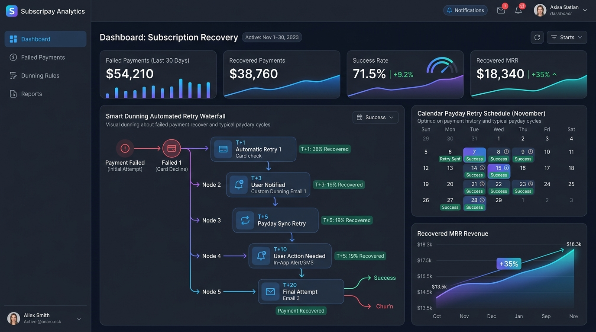

Automating Smart Dunning Retries to Cut Involuntary Churn by 35%

Subscription recovery platform showcasing the smart dunning automated retry waterfall, payday calendar sync, and recovered monthly recurring revenue (MRR).
In high-growth SaaS, customer acquisition is expensive. Losing an active, satisfied customer simply because their debit or credit card experienced a temporary soft decline is one of the most frustrating leaks in subscription unit economics.
Involuntary churn accounts for 20% to 40% of all lost subscribers. Naive subscription systems trigger brute-force retries every 24 hours, quickly wearing out issuer fraud scores and causing permanent payment rejection. In contrast, Smart Dunning aligns retry mechanics with real-world consumer banking habits.
"Scheduling failed payment retries on consumer payday cycles (the 1st and 15th) combined with automated card network updater pings recovers an average of 35% more monthly subscription revenue without creating user friction."
1. Soft Declines vs. Hard Declines: Why Distinction Matters
Includes: Stolen Card, Lost Card, Account Closed (Codes 04, 07, 14, 41, 43). Immediate action required: prompt user for a completely new payment method.
Includes: Insufficient Funds, Activity Limit Exceeded, Network Timeout (Codes 05, 51, 61, 91). Candidate for payday waterfall retries and account updating.
The 5-Stage Smart Dunning Recovery Waterfall
2. The Economics of Recovered MRR
Consider a SaaS business with $200,000 in monthly recurring revenue experiencing a 4% monthly churn rate ($8,000 lost MRR), half of which ($4,000) is involuntary.
By recovering 35% of those involuntary failures ($1,400 monthly), the cumulative impact over 12 months—taking into account compounding subscriber lifetime value—results in over $26,000 in additional annual gross profit with zero added advertising expenditure.
Turn on Smart Dunning Automation
Plug PayFlowPro Smart Dunning directly into Stripe, Chargebee, or custom billing APIs in under 15 minutes.